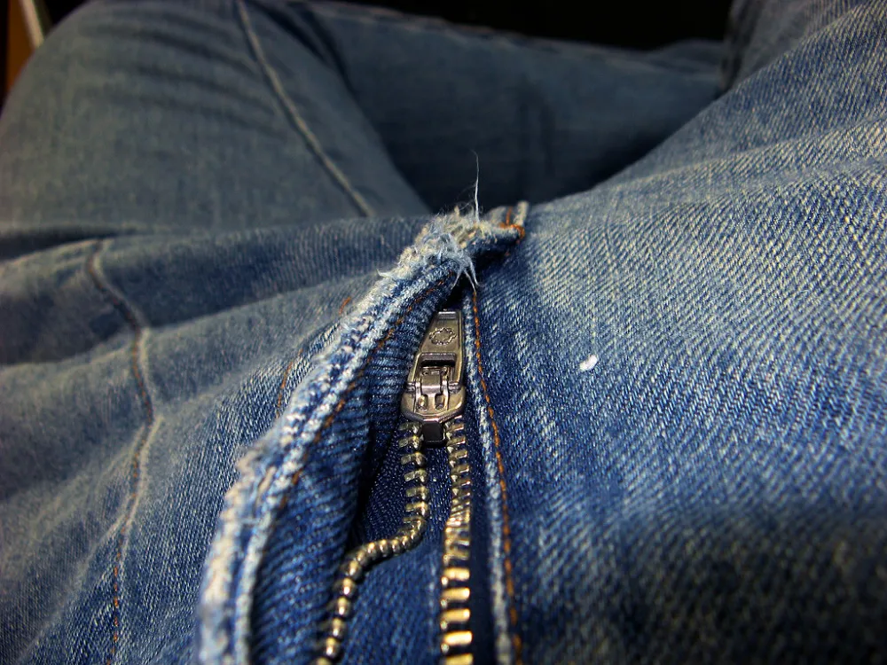

Autres
Mode, musique et plus · 6 guides vérifiés, pas à pas.
Les fiches du domaine Autres

Recoller la semelle d'une chaussure de sport
Une semelle qui bâille n'est pas la fin de vos chaussures. Avec la bonne colle, la réparation tient des années.
Réparer un trou dans un jean sans couture
Un trou au genou ou un accroc ? Une pièce thermocollante posée à l'envers le répare au fer à repasser, presque sans que ça se voie.
Recoudre un bouton
Un bouton qui pend ou qui est tombé se recoud en dix minutes, même sans avoir jamais cousu.
Réparer une fermeture éclair qui s'ouvre
La fermeture se rouvre derrière le curseur ? Le curseur s'est simplement écarté. Une pince suffit.
Changer les cordes d'une guitare classique
Sur une guitare classique, les cordes en nylon se nouent au chevalet. Le geste paraît compliqué la première fois, puis devient vite naturel.
Changer les cordes d'une guitare folk
Des cordes ternes qui ne tiennent plus l'accord ? Les changer redonne vie au son de la guitare, et c'est un geste que tout guitariste peut apprendre.